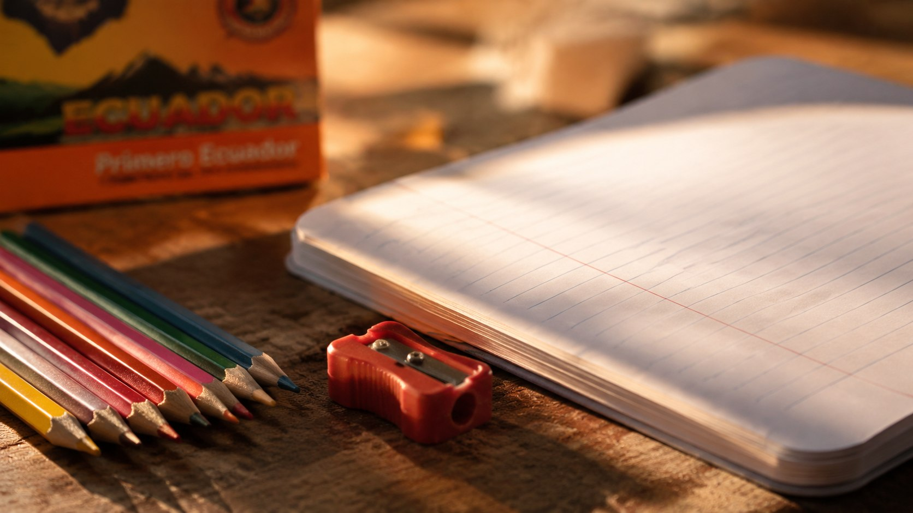
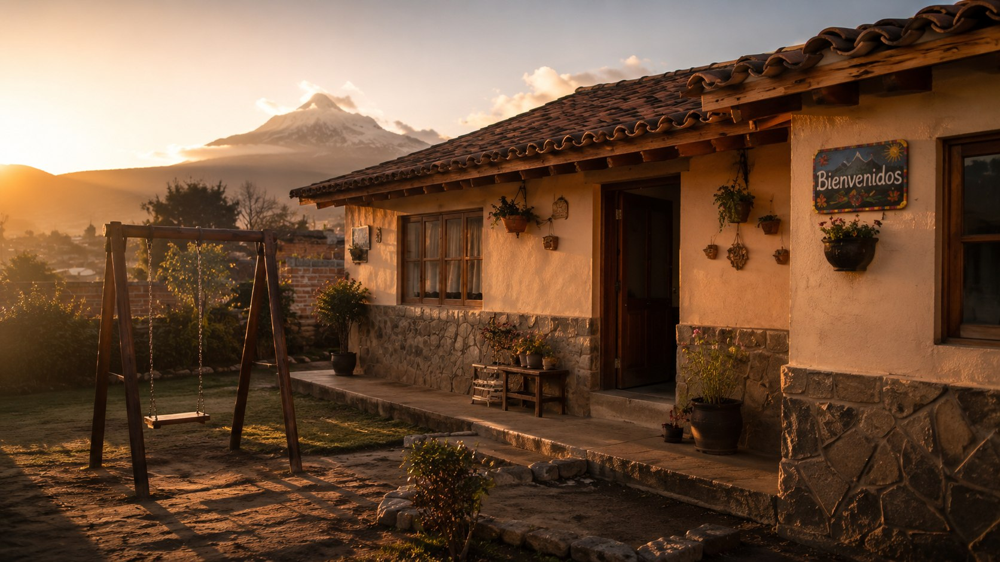
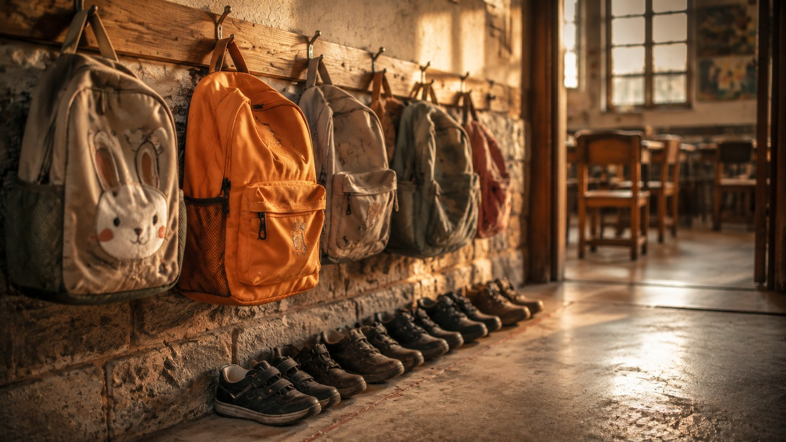
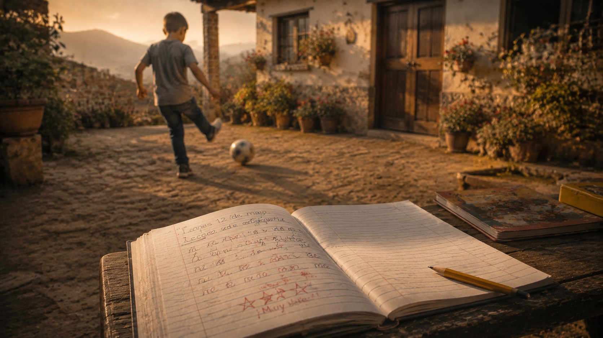
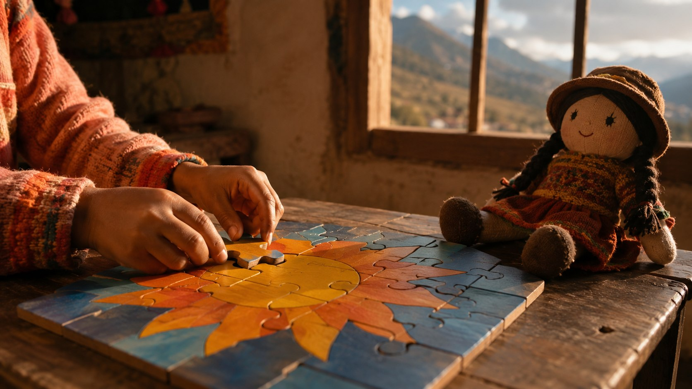
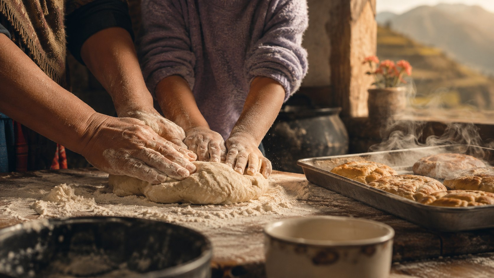
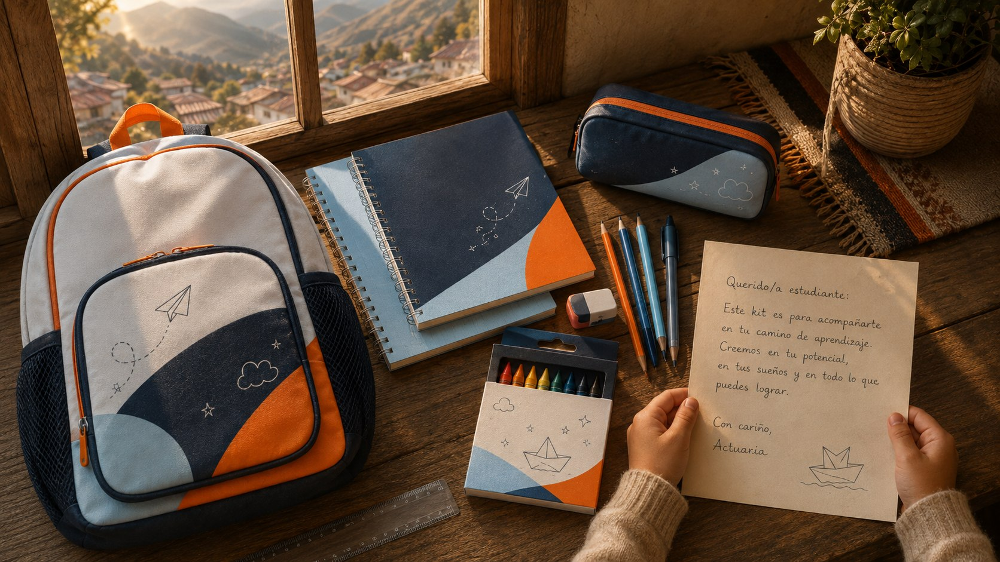

Campaña "Apadrina a un niño": kit escolar + carta de cariño. El video se envía a los colaboradores de Actuaria junto al link de la encuesta de apadrinamiento.
Voz cálida y cercana (femenina, LATAM neutro), ritmo pausado sobre piano con crescendo en la escena 6. La escena 7 es el testimonio de Gisela Coronado — idealmente con su voz real. El texto en pantalla es de apoyo y el video lleva subtítulos (parte del equipo lo verá sin audio). Uso de los nombres de los niños autorizado (supervisión, 07-ago-2026).

"¿Recuerdas la emoción de estrenar útiles… un primer día de clases?"

"En la Mitad del Mundo y en La Gasca hay dos hogares donde treinta historias comienzan de nuevo: son de la Fundación REMAR, más de treinta años cuidando a la niñez."

"Algunos de estos niños perdieron a sus padres. Otros no pueden estar con ellos. Hoy, los treinta estudian gracias a estos hogares."

"Cristopher tiene ocho años. Hace uno, no sabía leer ni escribir. Hoy pasa a tercero de básica… y sueña con ser médico, para salvar vidas."

"Doménica tiene cuatro. Llegó hace poco con sus tres hermanitas. Este año empieza la escuela… por primera vez."

"Para sostener los hogares, hornean y venden galletas tradicionales. Hacen todo lo que pueden… pero no tienen que hacerlo solos."
"Seguimos adelante con fe, y con profundo agradecimiento hacia quienes se suman a esta causa. Cada aporte transforma vidas." (idealmente la voz real de Gisela)

"Este regreso a clases, tú puedes transformar una: apadrina a uno de los treinta. Un kit escolar completo… y una carta escrita por ti. Tu apoyo puede ser el inicio de una gran historia en su vida."
"Cree en ellos. Actúa por ellos. Responde esta encuesta y apadrina esta causa."